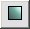
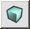
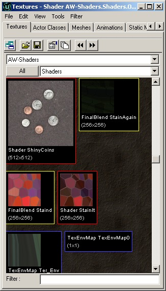

UDN
Search public documentation:
MaterialTutorialKR
English Translation
日本語訳
Interested in the Unreal Engine?
Visit the Unreal Technology site.
Looking for jobs and company info?
Check out the Epic games site.
Questions about support via UDN?
Contact the UDN Staff
日本語訳
Interested in the Unreal Engine?
Visit the Unreal Technology site.
Looking for jobs and company info?
Check out the Epic games site.
Questions about support via UDN?
Contact the UDN Staff
Materials (소재)
문서 요약: 소재 브라우저에 대한 소개 및 여러가지 쉐이더의 목차. 문서 변경 내역: 보다 다루기 쉬운 문서들로 분리하기 위한 최종 업데이트 Jason Lentz (DemiurgeStudios?). 원저자 Vandevenne (UdnStaff).서론
소재는 텍스처의 변경을 통해서 온갖 종류의 특수 효과를 만들어낼 수 있도록 해줍니다. 이 문서는 여러가지 소재 클래스의 사용법, 그리고 소재를 사용해서 다양한 효과를 만들어내는 방법에 대한 안내입니다. 소재는 얼핏 보면 다루기 힘들고 혼동스러운 것 같지만, 일단 사용법을 알고 나면 매우 강력한 도구가 될 수 있습니다.
 다음은 소재의 속성을 사용하는 방법에 대한 설명 및 이용할 수 있는 소재의 타입에 대한 더 깊이 있는 설명으로의 링크들입니다.
다음은 소재의 속성을 사용하는 방법에 대한 설명 및 이용할 수 있는 소재의 타입에 대한 더 깊이 있는 설명으로의 링크들입니다.
소재 브라우저의 사용
소재의 속성을 불러오려면, 텍스처 브라우저에서 텍스처를 오른 클릭하여 properties 옵션을 선택합니다. 다음과 같은 화면이 나타날 것입니다 (아래에서 다양한 섹션들에 대해 설명합니다): 1 -소재 윈도우- Material에서 선택된 소재를 표시합니다.
2 -소재 트리- 전체적인 소재의 트리를 표시합니다. 이 트리에서 다양한 소재를 선택하여 그 고유의 속성들을 확인할 수 있습니다.
3 -소재 표시 버튼- 이 버튼들은 소재 윈도우에서의 디스플레이를 변경합니다.
1 -소재 윈도우- Material에서 선택된 소재를 표시합니다.
2 -소재 트리- 전체적인 소재의 트리를 표시합니다. 이 트리에서 다양한 소재를 선택하여 그 고유의 속성들을 확인할 수 있습니다.
3 -소재 표시 버튼- 이 버튼들은 소재 윈도우에서의 디스플레이를 변경합니다. 

,
, and
 4 -속성- 이곳에서 소재 트리의 텍스트 버전을 찾아 트리에 있는 각 소재의 개별 속성들을 바꿀 수 있습니다. 소재 트리 윈도우에서 어떤 소재를 선택했는지에 따라, 변경할 수 있는 속성들이 달라질 수 있다는 점을 알아 두십시오.
4 -속성- 이곳에서 소재 트리의 텍스트 버전을 찾아 트리에 있는 각 소재의 개별 속성들을 바꿀 수 있습니다. 소재 트리 윈도우에서 어떤 소재를 선택했는지에 따라, 변경할 수 있는 속성들이 달라질 수 있다는 점을 알아 두십시오.
새 소재 만들기
새 소재를 만들려면 텍스처 브러우저로 되돌아가 File 메뉴에서 "New"를 선택하십시오. "New Material" 윈도우가 나타날 것입니다. 이 윈도우에서 적절한 패키지, 그룹 및 이름을 설정하고 새로 만들 소재의 종류를 결정해야 합니다. 이곳에서 선택할 수 있는 MaterialClass의 타입은 매우 여러가지입니다. "Class" 메뉴에서 Raw Material(가공하지 않은 소재) 이나 Real-time Procedural Texture(실시간 절차적 텍스처) 를 선택할 수 있지만, Raw Material 이 설정된 채로 남겨두어야 한다는 것을 유념하십시오. 다음 섹션에서는 여러가지 타입의 MaterialClass 및 각 타입에 대해 보다 상세하게 설명되어 있는 문서로의 링크를 소개합니다.
이곳에서 선택할 수 있는 MaterialClass의 타입은 매우 여러가지입니다. "Class" 메뉴에서 Raw Material(가공하지 않은 소재) 이나 Real-time Procedural Texture(실시간 절차적 텍스처) 를 선택할 수 있지만, Raw Material 이 설정된 채로 남겨두어야 한다는 것을 유념하십시오. 다음 섹션에서는 여러가지 타입의 MaterialClass 및 각 타입에 대해 보다 상세하게 설명되어 있는 문서로의 링크를 소개합니다.
Raw Material 클래스
여러분이 거의 대부분의 경우 사용하게 될Raw Material 클래스에는, 선택할 수 있는 더 많은 하위 클래스들이 있습니다. 이 하위 클래스들은 오직 명료화를 위해 5개의 다른 카테고리로 나뉘어져 있습니다 (아래에서 요점 설명). 이 하위 클래스들 둥 상당수는 더 이상 기능하지 않거나 애당초 레벨 디자이너들이 사용하도록 의도된 것이 아니기 때문에 포함되지 않았음을 양지해 주십시오. Unreal Ed 역시 여러가지 소재들을 클래스들로 분리하고 텍스처 브라우저에서 이 클래스들을 서로 구별합니다. 다음은 텍스처 브라우저에서 그룹으로 묶여진 몇가지 다른 타입의 소재들입니다:
Filter 메뉴를 사용하면 보다 나은 개관을 위해 특정 타입의 소재만을 선택해서 볼 수 있습니다 . Raw Material 클래스들이 전부 색 테두리를 가지고 있는 것은 아니지만, 여기서는 색 테두리를 가진 것에 대해 간단히 설명합니다:| Raw Material 클래스 | 설명 | 테두리 |
|---|---|---|
| Texture | 전혀 특별한 것이 없는 보통의 텍스처 또는 절차적 텍스처들입니다. 다른 모든 텍스처들이 보통의 텍스처를 기초로 사용하여 빌드합니다. | 없음 |
| Shaders | 텍스처에 다른 효과들을 비롯하여 불투명, 반사성, 자가조명 등의 효과를 추가할 수 있습니다. | |
| Modifiers | 다른 소재나 텍스처에 특정의 수정을 적용합니다. 예를 들면, TexRotate 소재는 텍스처를 회전하며, TexScaler 는 텍스처의 스케일을 변경합니다. | |
| CubeMaps | 6개의 텍스처를 취해서 특정한 방법으로 이것들을 배열에 적용하여 텍스처 큐브가 되게 합니다. EnvironmentMaps을 작성하는데 사용됩니다. | |
| Combiners | 여러분이 선택한 방법으로 두 개의 다른 소재를 결합합니다. | |
| FinalBlends | 최종 결과 소재 또는 텍스처에 투명함, 어둡게 하기, 알파 블렌딩 등을 포함하는 단순한 효과들을 추가합니다. |
Shaders
MaterialsShaders 가장 널리 사용되는 소재 클래스들입니다. 이 문서에는 Shader 소재 클래스가 설명되어 있습니다. Shader를 사용하면 여러 텍스처들을 함께 사용하여 간단한 효과를 얻을 수 있습니다.Modifier
MaterialsModifiers 이 소재 클래스들은 텍스처에 특정한 수정을 행하여 기초 텍스처에 표준이 아닌 수정을 할 수 있도록 합니다. 이 문서에서 설명된 하위 클래스들은 ColorModifier, ConstantColor, TexEnvMap, TexOscillator, TexPanner, TexRotator, 및 TexScaler 입니다.Combiner
MaterialsCombiners 소재 클래스 Combiner 는 두 개의 다른 소재를 결합하여 제3의 소재를 만들어 내기에 좋습니다. Combiner를 사용하면 아주 복잡한 소재 트리를 만들어 층을 이룬 효과를 얻을 수 있습니다.CubeMaps 및 TexEnvMaps
MaterialsEnvironmentMaps 이 문서에서는 CubeMap 과 TexEnvMap 소재 클래스를 사용하여 환경 맵을 만드는 법을 볼 수 있습니다.FinalBlend
MaterialsFinalBlend FinalBlend 는 텍스처에 블렌딩 효과를 적용합니다. 여기 링크된 문서에서는 이 소재 하위 클래스의 사용 방법에 대해 설명합니다.견본 맵
 여러가지 복잡한 소재들이 사용되고 있는 것을 보여주는 견본 맵들에 대해서는 다음 문서를 살펴 보십시오:
ExampleMapsEPIC#Materials_Example_Map (견본 맵은 이 페이지의 맨 아래에 있습니다)
여러가지 복잡한 소재들이 사용되고 있는 것을 보여주는 견본 맵들에 대해서는 다음 문서를 살펴 보십시오:
ExampleMapsEPIC#Materials_Example_Map (견본 맵은 이 페이지의 맨 아래에 있습니다)